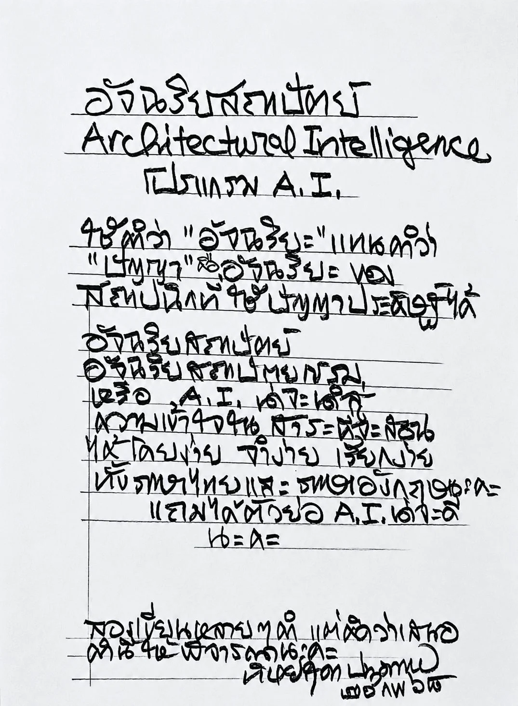
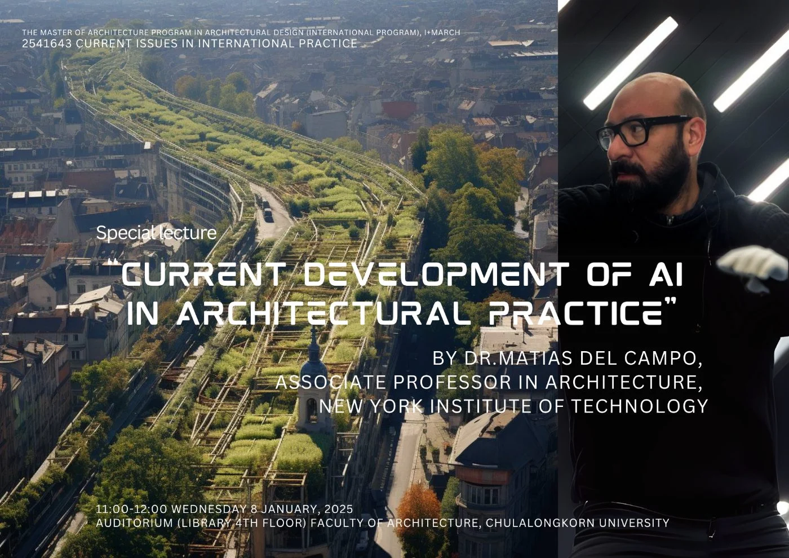

กลุ่มวิจัย
อัจฉริยสถาปัตย์Architectural Intelligence
กลุ่มวิจัยอัจฉริยสถาปัตย์ศึกษาว่าปัญญาประดิษฐ์จะเปลี่ยนการออกแบบ การปฏิบัติวิชาชีพ และการศึกษาสถาปัตยกรรมได้อย่างไร งานของเราครอบคลุมการสร้างรูปทรงด้วย AI การก่อสร้างที่ยั่งยืน และการทำงานอัตโนมัติ โดยให้ความสำคัญเป็นพิเศษกับสถาปัตยกรรมไทยและมรดกทางวัฒนธรรม The Architectural Intelligence (A.I.) Research Group explores how artificial intelligence can transform architectural design, practice, and education. Our work spans AI-driven form generation, sustainable construction, and workflow automation, with a special focus on Thai architecture and cultural heritage.
ผ่านความร่วมมือข้ามศาสตร์ เราพัฒนาเครื่องมือและวิธีการที่ส่งเสริมความคิดสร้างสรรค์ รักษาขนบธรรมเนียม และเตรียมสถาปนิกรุ่นใหม่สู่ยุคการออกแบบที่ขับเคลื่อนด้วย AI Through interdisciplinary collaboration, we develop tools and methods that enhance creativity, preserve tradition, and prepare future architects for the AI-empowered design era.
เกี่ยวกับกลุ่มOverview
สถาปัตยกรรม วิศวกรรม และปัญญาประดิษฐ์ บนโต๊ะเขียนแบบเดียวกันArchitecture, engineering and machine intelligence on one drawing board
กลุ่มวิจัยอัจฉริยสถาปัตย์เป็นกลุ่มวิจัยระดับเริ่มต้น (Entry Level) ภายใต้โครงการ Special Task Force for Activating Research (STAR) สนับสนุนโดยสำนักบริหารวิจัย จุฬาลงกรณ์มหาวิทยาลัย ปัจจุบันกลุ่มอยู่ในรอบการดำเนินงาน 6 เดือนสุดท้าย ซึ่งอยู่ระหว่างการพิจารณาอนุมัติ ก่อนเสนอขอยกระดับเป็นหน่วยปฏิบัติการวิจัย (Research Unit: RU) The group is an entry-level research lab under the Special Task Force for Activating Research (STAR) programme, funded by the Office of Research Affairs, Chulalongkorn University. It is now in its final six-month cycle — pending approval — before applying to be upgraded to a Research Unit (RU).
สมาชิกของกลุ่มมาจากภาควิชาสถาปัตยกรรมศาสตร์ สถาปัตยกรรมไทย การออกแบบอุตสาหกรรม และวิศวกรรมโยธา ทำงานร่วมกันในโจทย์ที่ต้องอาศัยทั้งการตัดสินใจเชิงออกแบบและการคำนวณควบคู่กัน Members are drawn from Architecture, Thai Architecture, Industrial Design and Civil Engineering — a deliberately mixed table for problems that need design judgement and computation in equal measure.
ที่มาของชื่อHow the name came about
ชื่อ “Architectural Intelligence” ตั้งโดย รศ.ดร.ทิพย์สุดา ปทุมานนท์ The name “Architectural Intelligence” was given by Assoc. Prof. Dr. Thipsuda Pathummanon
อาจารย์ผู้เป็นที่เคารพและเกษียณอายุราชการจากภาควิชาสถาปัตยกรรมศาสตร์ คณะสถาปัตยกรรมศาสตร์ จุฬาลงกรณ์มหาวิทยาลัย โดยเสนอชื่อนี้ในการประชุมเปิดตัวกลุ่มวิจัยรอบที่ 1 ชื่อดังกล่าวยึดโยงงานของกลุ่มไว้กับ “ปัญญา” ของสถาปัตยกรรมเอง มิใช่เพียงการนำเครื่องมือ AI มาใช้ A renowned retired lecturer of the Department of Architecture, Faculty of Architecture, Chulalongkorn University. She proposed the name at the group's first-cycle kick-off meeting — anchoring the work in the intelligence of architecture itself, not in the tools alone.

ในรอบที่ 1–2T1 journal articles
across cycles 1–2
(SciVal/Scopus, 2020–2025)citations to members' work
(SciVal/Scopus, 2020–2025)
Top 10% ตาม CiteScoreof output (8 papers) in top-10%
CiteScore journals
ที่สมาชิกกลุ่มสังกัดdepartments | faculties
the members are drawn from
ขอบเขตงานวิจัยResearch themes
สี่เส้นทางที่งานของกลุ่มเดินคู่กันไปFour lines of enquiry, worked in parallel
การสร้างรูปทรงและการหาค่าเหมาะที่สุดForm generation & optimisation
การเรียนรู้เชิงเสริมกำลังและกราฟ สำหรับหาค่าเหมาะที่สุดของโครงถักและโครงสร้างเปลือกบางReinforcement learning and graph representations for truss and shell structural optimisation.
การก่อสร้างคาร์บอนต่ำและความยั่งยืนLow-carbon & sustainable construction
การประเมินวัฏจักรชีวิต วัสดุไม้ และการออกแบบที่ลดคาร์บอนสะสมในอาคารLife-cycle assessment, timber systems and the reduction of embodied carbon in buildings.
BIM และการทำงานอัตโนมัติBIM & workflow automation
การถอดปริมาณ การติดตามความก้าวหน้างานก่อสร้างด้วยภาพ และการหาค่าเหมาะที่สุดหลายวัตถุประสงค์บน BIMQuantity take-off, vision-based site progress tracking, and multi-objective optimisation on BIM models.
สถาปัตยกรรมไทยและมรดกวัฒนธรรมThai architecture & heritage
การจัดกลุ่มคลังภาพถ่ายเจดีย์และวัดไทยด้วย AI ร่วมกับการตีความของผู้เชี่ยวชาญExpert-guided AI clustering of archival photography of Thai stupas and temples.
หน่วยงานย่อยในรอบปัจจุบันSub-units in the current cycle
ระบบเครือข่ายคำสำคัญจากคลังภาพถ่ายเจดีย์และวัดไทยKeyword-network system built from a photographic archive of Thai stupas and temples
แบบจำลองภาษา-ภาพเฉพาะทางบนแบบจำลองฐาน สำหรับงานวิจัยด้านอาคารDomain-specific vision-language model on a foundation model, for building research
การสร้างแบบจำลอง AI สำหรับโจทย์ทางสถาปัตยกรรมและโครงสร้างConstruction of AI models for architectural and structural problems
การสังเคราะห์ข้อมูลและการทดสอบแบบจำลอง AIData synthesis and testing of the AI models
รอบการดำเนินงานProgramme cycles
สามรอบ จากกลุ่มวิจัยระดับเริ่มต้นสู่หน่วยปฏิบัติการวิจัยThree cycles, from entry-level group to Research Unit
1 Apr 2024 — 30 Sep 2025
ตั้งกลุ่ม กำหนดหัวข้อร่วม และเริ่มผลิตผลงานForming the group, agreeing shared themes, first output.
1 Oct 2025 — 30 Sep 2026
ขยายเครือข่ายนานาชาติ และเพิ่มปริมาณผลงาน T1International network widened; T1 output stepped up.
1 Oct 2026 — 31 Mar 2027
รอบ 6 เดือนสุดท้าย เตรียมยกระดับเป็นหน่วยปฏิบัติการวิจัย (RU)The final six months, preparing the Research Unit (RU) application.
รอบที่ 1 · 1 เมษายน 2567 – 30 กันยายน 2568Cycle 1 · 1 April 2024 – 30 September 2025
ผลงานตีพิมพ์ในวารสารวิชาการระดับนานาชาติ ที่มีชื่อกลุ่มวิจัยปรากฏPeer-reviewed international journal articles carrying the group's name.
-
01
Scopus T1
Nakapan, W., Kupwiwat, C.-t., & Khosakitchalert, C. (2025). DeepTagPhoto: Expert-guided unsupervised clustering of Thai architectural photography using pre-trained CNN models. Frontiers of Architectural Research.
จัดกลุ่มภาพถ่ายเจดีย์ 824 ภาพ ที่คัดจากคลังภาพวิชาการ 7,696 ภาพ ด้วยการเรียนรู้แบบไม่มีผู้สอน โดยเปรียบเทียบคุณลักษณะเชิงลึกจากโครงข่าย CNN ที่ฝึกไว้ล่วงหน้าสี่แบบ ผลการจัดกลุ่มถูกตรวจสอบโดยผู้เชี่ยวชาญ ซึ่งนำไปสู่การแก้ไขป้ายกำกับเดิมและเผยให้เห็นความคลาดเคลื่อนของการติดป้ายด้วยมือClusters 824 stupa photographs, drawn from a 7,696-image academic archive, without using existing labels — comparing deep features from four pre-trained CNNs. A domain expert validated the groupings, and the exercise led to revisions of earlier annotations, exposing label noise in manual tagging.
doi.org/10.1016/j.foar.2025.09.012 -
02
Scopus T1
Zain, M., Kupwiwat, C.-t., Prasittisopin, L., Praphaphankul, N., Kaewunruen, S., & Zaidi, M. A. A. (2026). Framework for developing resistivity models to identify potential safety threats in embankment dams and assessing the use of bentonite in repairing deep cracks in the embankments. Engineered Science, 39, 2054.
เสนอกรอบการทำงานที่ผสานการสำรวจภาคสนาม การสำรวจทางธรณีฟิสิกส์ และการทดสอบในห้องปฏิบัติการ เพื่อระบุจุดเสี่ยงด้านความปลอดภัยในเขื่อนดิน พร้อมประเมินการใช้เบนโทไนต์ในการซ่อมรอยแตกลึกProposes a framework combining field inspection, geophysical survey and laboratory testing to locate safety threats in embankment dams, and assesses bentonite grouting as a repair for deep cracks.
doi.org/10.30919/es2054 -
03
Scopus T1
Seghier, T., Khosakitchalert, C., Ohueri, C., Liu, Z., Ng, K., & Bin Che Din, N. (2026). A BIM-based multi-objective optimization method for improving acoustic reverberation performance in educational spaces. Technology|Architecture + Design.
ใช้แบบจำลองสารสนเทศอาคาร (BIM) ร่วมกับการหาค่าเหมาะที่สุดหลายวัตถุประสงค์ เพื่อปรับปรุงเวลาก้องสะท้อนในพื้นที่การเรียนการสอน โดยชั่งน้ำหนักระหว่างคุณภาพเสียงกับข้อจำกัดของวัสดุCouples Building Information Modelling with multi-objective optimisation to improve reverberation time in educational spaces, weighing acoustic quality against material constraints.
doi.org/10.1080/24751448.2025.2593015 ↗
รอบที่ 2 · 1 ตุลาคม 2568 – 30 กันยายน 2569Cycle 2 · 1 October 2025 – 30 September 2026
ผลงานตีพิมพ์ในวารสารวิชาการระดับนานาชาติ ที่มีชื่อกลุ่มวิจัยปรากฏPeer-reviewed international journal articles carrying the group's name.
-
04
Scopus T1
Kupwiwat, C.-t., & Ohsaki, M. (2026). A unified evaluation framework for reinforcement learning paradigms in bi-objective truss optimization. Advanced Engineering Informatics, 74, 104750.
เปรียบเทียบการเรียนรู้เชิงเสริมกำลังแบบมาตรฐาน แบบหลายภารกิจ และแบบหลายตัวแทน บนการแทนโครงถักด้วยกราฟ โดยมีวัตถุประสงค์คู่คือลดปริมาตรโครงสร้างและลดการเบี่ยงเบนเชิงเรขาคณิต ผลชี้ว่าแบบหลายตัวแทนให้คำตอบพาเรโตที่หลากหลายและถ่ายโอนข้ามโจทย์ได้ดีที่สุดCompares standard, multi-task and multi-agent reinforcement learning on graph representations of trusses, minimising structural volume and geometric deviation together. Multi-agent learning yields the most diverse and transferable Pareto-optimal solutions.
doi.org/10.1016/j.aei.2026.104750 -
05
Scopus T1
Kupwiwat, C.-t., Hawasly, F., & Prasittisopin, L. (2025). Integrating genetic algorithm and life cycle assessment for low-carbon optimization of timber lattice shell structures. Structures, 82, 110836.
ผสานขั้นตอนวิธีเชิงพันธุกรรมเข้ากับการประเมินวัฏจักรชีวิต เพื่อหารูปทรงโครงสร้างเปลือกโครงข่ายไม้ที่ปล่อยคาร์บอนต่ำ โดยพิจารณาผลกระทบตลอดวัฏจักรชีวิตควบคู่กับสมรรถนะเชิงโครงสร้างPairs a genetic algorithm with life-cycle assessment to find low-carbon geometries for timber lattice shells, weighing whole-life impact alongside structural performance.
doi.org/10.1016/j.istruc.2025.110836 -
06
Scopus T1
Kupwiwat, C.-t., Suriyaporn, P., Hawasly, F., & Prasittisopin, L. (2026). Life-cycle-aware structural optimization of timber lattice shells using multi-task graph reinforcement learning. Structures, 89, 112134.
ต่อยอดงานข้างต้นด้วยการเรียนรู้เชิงเสริมกำลังบนกราฟแบบหลายภารกิจ ทำให้แบบจำลองเดียวรับมือโจทย์เปลือกโครงข่ายไม้ได้หลายรูปแบบ พร้อมคำนึงถึงคาร์บอนตลอดวัฏจักรชีวิตตั้งแต่ขั้นออกแบบExtends that work with multi-task graph reinforcement learning, so one trained model handles several timber lattice-shell problems while keeping life-cycle carbon in the objective from the outset.
doi.org/10.1016/j.istruc.2026.112134 -
07
Scopus T1
Saovana, N., & Khosakitchalert, C. (2026). Automating dynamic scaffolding construction progress tracking using deep learning-based semantic image segmentation. Nakhara: Journal of Environmental Design and Planning, 25(2), Article 609.
ใช้การแบ่งส่วนภาพเชิงความหมายด้วยการเรียนรู้เชิงลึก ติดตามความก้าวหน้าของการติดตั้งนั่งร้านที่เปลี่ยนแปลงตลอดเวลาในหน่วยงานก่อสร้าง แทนการตรวจนับด้วยสายตาUses deep-learning semantic image segmentation to track the progress of scaffolding as it goes up and comes down on site, replacing manual visual inspection.
doi.org/10.54028/NJ202625609 -
08
Scopus T1
Praphaphankul, N., Prayoonwet, W., Tiprak, K., Akutsu, A., & Sasaki, E. (2026). Accessible remote sensing of bridge movement monitoring with UAV-based SfM photogrammetry and unsupervised machine learning. Structure and Infrastructure Engineering, 1–26.
เสนอวิธีตรวจวัดการเคลื่อนตัวของสะพานที่เข้าถึงได้ในต้นทุนต่ำ ด้วยภาพถ่ายจากอากาศยานไร้คนขับผ่านกระบวนการ SfM photogrammetry ร่วมกับการเรียนรู้ของเครื่องแบบไม่มีผู้สอนPresents a low-cost, accessible way to monitor bridge movement, combining UAV-based SfM photogrammetry with unsupervised machine learning.
doi.org/10.1080/15732479.2026.2698097 -
09
Scopus T1
Praphaphankul, N., Koohathong, P., Tiprak, K., Lenwari, A., & Thongchom, C. (2026). Axial behavior of hollow concrete columns with GFRP and hybrid reinforcement: An integrated experimental and numerical study. Structures, 91, 112550.
ศึกษาพฤติกรรมรับแรงตามแนวแกนของเสาคอนกรีตกลวงที่เสริมด้วย GFRP และการเสริมแบบผสม ด้วยการทดลองในห้องปฏิบัติการควบคู่กับการวิเคราะห์เชิงตัวเลขStudies the axial behaviour of hollow concrete columns reinforced with GFRP and hybrid reinforcement, through laboratory testing paired with numerical analysis.
doi.org/10.1016/j.istruc.2026.112550
รอบที่ 3 · 1 ตุลาคม 2569 – 31 มีนาคม 2570Cycle 3 · 1 October 2026 – 31 March 2027
ผลงานตีพิมพ์ที่เกิดขึ้นแล้วในรอบนี้ โดยระบุชื่อกลุ่มวิจัยในสังกัดผู้เขียนPublications already out in this cycle, carrying the group in the author affiliations.
-
10
Scopus Q2
Arunotayanun, K., Papim, P., Muyjaroen, W., Unsiwilai, S., Kaewmoracharoen, M., & Jongvivatsakul, P. (2026). Explainable AI and ordered logistic regression for modeling passenger behavior in app-based ride-hailing services under systemic disruption. Engineering Journal, 30(6), 105.
ใช้ปัญญาประดิษฐ์แบบอธิบายได้ (XAI) ควบคู่กับการถดถอยโลจิสติกแบบอันดับ เพื่อวิเคราะห์พฤติกรรมผู้โดยสารบริการเรียกรถผ่านแอปพลิเคชันในภาวะที่ระบบขนส่งถูกรบกวนPairs explainable AI with ordered logistic regression to model how passengers of app-based ride-hailing services behave when the transport system is disrupted.
doi.org/10.4186/ej.2026.30.6.105 เผยแพร่ 24 สิงหาคม 2569Published 24 August 2026 -
11
Scopus Q2
Kupwiwat, C.-t., et al. (2026). Reframing architectural classification as representation: Perceptual, structural, and hybrid encodings under small-data conditions. Frontiers of Architectural Research.
ทบทวนการจำแนกประเภทสถาปัตยกรรมใหม่ในฐานะปัญหาของการแทนข้อมูล โดยเปรียบเทียบการเข้ารหัสเชิงการรับรู้ เชิงโครงสร้าง และแบบผสม ภายใต้เงื่อนไขที่มีข้อมูลจำนวนน้อยRecasts architectural classification as a problem of representation, comparing perceptual, structural and hybrid encodings under small-data conditions.
ตอบรับตีพิมพ์ 1 กันยายน 2569 · รอเลข DOIAccepted 1 September 2026 · DOI pending
รอบนี้กำลังดำเนินการและอยู่ระหว่างการพิจารณาอนุมัติ รายการด้านบนจะทยอยเพิ่มเมื่อบทความได้รับการตอบรับ เป้าหมายตามแผนคือ T1 จำนวน 3 เรื่อง Q1 จำนวน 2 เรื่อง และ Q2 จำนวน 1 เรื่อง พร้อมข้อเสนอขอทุนวิจัยจากแหล่งทุนภายในและภายนอกอย่างน้อยหนึ่งโครงการ This cycle is running and pending approval. The list above grows as further articles are accepted. The plan targets three T1, two Q1 and one Q2 article, together with at least one internal or external grant proposal submitted or funded.
ทีมวิจัยTeam
สมาชิกทีมวิจัยTeam members
ผศ.ดร.วลัยภรณ์ นาคพันธุ์Asst. Prof. Dr. Walaiporn Nakapan
ภาควิชาสถาปัตยกรรมศาสตร์ คณะสถาปัตยกรรมศาสตร์Department of Architecture, Faculty of Architecture
ประวัติอาจารย์ ↗Faculty profile ↗ ORCID 0000-0002-9300-2915รศ.ดร.ชวนนท์ โฆษกิจจาเลิศAssoc. Prof. Dr. Chavanont Khosakitchalert
ภาควิชาสถาปัตยกรรมศาสตร์ คณะสถาปัตยกรรมศาสตร์Department of Architecture, Faculty of Architecture
ประวัติอาจารย์ ↗Faculty profile ↗ ORCID 0000-0002-1115-7009ผศ.ดร.ชิตาทร คุปต์วิวัฒน์Asst. Prof. Dr. Chi-tathon Kupwiwat
ภาควิชาสถาปัตยกรรมศาสตร์ คณะสถาปัตยกรรมศาสตร์Department of Architecture, Faculty of Architecture
ประวัติอาจารย์ ↗Faculty profile ↗ ORCID 0000-0003-2355-9707ผศ.ดร.มานพ แก้วโมราเจริญAsst. Prof. Dr. Manop Kaewmoracharoen
ภาควิชาวิศวกรรมโยธา คณะวิศวกรรมศาสตร์Department of Civil Engineering, Faculty of Engineering
ประวัติอาจารย์ ↗Faculty profile ↗ ORCID 0000-0002-9320-6301ผศ.นภัส ขวัญเมืองAsst. Prof. Napat Kwanmuang
ภาควิชาสถาปัตยกรรมศาสตร์ (สถาปัตยกรรมไทย) คณะสถาปัตยกรรมศาสตร์Department of Architecture (Thai Architecture), Faculty of Architecture
ประวัติอาจารย์ ↗Faculty profile ↗รศ.ดร.ธนธร กิตติกานต์Assoc. Prof. Dr. Thanathorn Kittikant
ภาควิชาการออกแบบอุตสาหกรรม คณะสถาปัตยกรรมศาสตร์Department of Industrial Design, Faculty of Architecture
ประวัติอาจารย์ ↗Faculty profile ↗ดร.นิติพงษ์ ประภาพันธ์กุลDr. Nitipong Praphaphankul
ภาควิชาสถาปัตยกรรมศาสตร์ คณะสถาปัตยกรรมศาสตร์Department of Architecture, Faculty of Architecture
ประวัติอาจารย์ ↗Faculty profile ↗ ORCID 0000-0003-0301-2026ข่าวและกิจกรรมNews & activities
การยอมรับในระดับประเทศและระดับนานาชาติNational and international recognition
AA-THU Visiting School Shenzhen 2026
“Digital Engine, Super Making” · 数字引擎，超级智造
ผศ.ดร.วลัยภรณ์ นาคพันธุ์ และ ดร.นิติพงษ์ ประภาพันธ์กุล ได้รับเชิญเป็น Design Tutor และวิทยากร โดย AA School (ลอนดอน) ร่วมกับ iFHHs, Tsinghua SIGS ภายในโรงเรียนได้ก่อสร้างศาลาไม้อัดขนาด 4.2 × 4.8 × 2.5 เมตร “Natural Forces, Super Folding” และบรรยายออนไลน์เรื่องการใช้ AI สำรวจคลังภาพถ่ายสถาปัตยกรรมไทยAsst. Prof. Dr. Walaiporn Nakapan and Dr. Nitipong Praphaphankul were invited as Design Tutors and speakers by the AA School (London) with iFHHs, Tsinghua SIGS. The school built a 4.2 × 4.8 × 2.5 m plywood pavilion, “Natural Forces, Super Folding”, alongside an online lecture on expert-guided AI for the Thai architectural photographic archive.
ลำดับเหตุการณ์สำคัญMilestones
-
เมษายน 2567April 2024ประชุมเปิดตัวกลุ่มวิจัยรอบที่ 1 — ที่ประชุมรับชื่อ “Architectural Intelligence” ตามที่ รศ.ดร.ทิพย์สุดา ปทุมานนท์ เสนอCycle 1 kick-off meeting — the group adopts the name “Architectural Intelligence”, proposed by Assoc. Prof. Dr. Thipsuda Pathummanon.
-
พฤษภาคม 2569May 2026ร่วมจัดแสดงผลงานของกลุ่มใน ARCH Expo คณะสถาปัตยกรรมศาสตร์ จุฬาลงกรณ์มหาวิทยาลัยThe group exhibits its work at ARCH Expo, Faculty of Architecture, Chulalongkorn University.
-
สิงหาคม 2569August 2026ส่งรายงานผลการดำเนินงาน 12 เดือน ต่อสำนักบริหารวิจัย พร้อมผลงานตีพิมพ์ระดับ T1 จำนวน 6 เรื่องTwelve-month progress report submitted to the Office of Research Affairs, with six T1 articles in the cycle.
-
ตุลาคม 2569October 2026เริ่มรอบที่ 3 — หกเดือนสุดท้าย เพื่อเตรียมเสนอขอยกระดับเป็นหน่วยปฏิบัติการวิจัย (RU)Cycle 3 opens — the final six months, preparing the Research Unit (RU) application.
ความร่วมมือวิจัยกับมหาวิทยาลัยระดับโลกResearch collaborations with world-ranked universities
ผลงานตีพิมพ์ของกลุ่มเกิดขึ้นร่วมกับผู้ร่วมวิจัยจากมหาวิทยาลัยที่อยู่ใน 100 อันดับแรกของ QS World University RankingsThe group's publications are co-authored with researchers at universities inside the QS World University Rankings top 100.
-
QS Top 100Kyoto Universityญี่ปุ่นJapanร่วมวิจัยกับ ผศ.ดร.ชิตาทร คุปต์วิวัฒน์ — การเรียนรู้เชิงเสริมกำลังแบบหลายเอเจนต์บนกราฟ เพื่อออกแบบโครงถักWith Asst. Prof. Dr. Chi-tathon Kupwiwat — multi-agent graph reinforcement learning for truss designดูบทความ ↗View the article ↗
-
QS Top 100University of BirminghamสหราชอาณาจักรUnited Kingdomร่วมวิจัยกับ ผศ.ดร.ชิตาทร คุปต์วิวัฒน์ — การตรวจวัดและซ่อมแซมความปลอดภัยของเขื่อนดินWith Asst. Prof. Dr. Chi-tathon Kupwiwat — safety assessment and repair of embankment damsดูบทความ ↗View the article ↗
-
QS Top 100Institute of Science Tokyoญี่ปุ่นJapanร่วมวิจัยกับ ดร.นิติพงษ์ ประภาพันธ์กุล — การตรวจวัดการเคลื่อนตัวของสะพานด้วยโดรนและการเรียนรู้ของเครื่องWith Dr. Nitipong Praphaphankul — UAV photogrammetry and machine learning for bridge monitoringดูบทความ ↗View the article ↗
 ดูวิดีโอบน YouTubeWatch on YouTube
ดูวิดีโอบน YouTubeWatch on YouTube
“Alien Intelligence: An Introduction to AI for Architects”
Prof. Neil Leach · STAR AI Lecture Series
กลุ่มวิจัยเป็นเจ้าภาพจัดการบรรยายสาธารณะโดย Prof. Neil Leach ศาสตราจารย์ประจำ Florida International University ผู้อำนวยการหลักสูตร Doctor of Design ผู้ร่วมก่อตั้ง DigitalFUTURES และผู้เขียน Architecture in the Age of Artificial Intelligence ชมย้อนหลังได้ที่คลิปด้านข้างThe group hosted a public lecture by Prof. Neil Leach — director of the Doctor of Design programme at Florida International University, co-founder of DigitalFUTURES, and author of Architecture in the Age of Artificial Intelligence. The recording is linked on the left.

ดูวิดีโอบน YouTubeWatch on YouTube“Current Development of AI in Architectural Practice”
Dr. Matias del Campo
การบรรยายพิเศษโดย Dr. Matias del Campo รองศาสตราจารย์ด้านสถาปัตยกรรม New York Institute of Technology ว่าด้วยพัฒนาการล่าสุดของการนำ AI มาใช้ในการปฏิบัติวิชาชีพสถาปัตยกรรม จัดภายในรายวิชา 2541643 Current Issues in International Practice หลักสูตรสถาปัตยกรรมศาสตรมหาบัณฑิต สาขาวิชาสถาปัตยกรรม (หลักสูตรนานาชาติ) I+MARCH A special lecture by Dr. Matias del Campo, Associate Professor in Architecture at the New York Institute of Technology, on where AI has actually reached in architectural practice. Hosted within 2541643 Current Issues in International Practice, Master of Architecture in Architectural Design (International Program), I+MARCH.
TorThai — จิ๊กซอว์เจดีย์ไทยพิมพ์ 3 มิติTorThai — a 3D-printed Thai chedi puzzle
ผลงานของ ผศ.นภัส ขวัญเมือง ได้รับรางวัลนวัตกรรมแห่งชาติ นำการพิมพ์สามมิติมาใช้สื่อสารสถาปัตยกรรมไทยA puzzle by Asst. Prof. Napat Kwanmuang that won a National Innovation Award, using 3D printing to make Thai architectural form something you can take apart and rebuild.
อ่านข่าว ↗Read the post ↗บทความในนิตยสารศิลปวัฒนธรรมArticle in Silapa Watthanatham magazine
รศ.ดร.ธนธร กิตติกานต์ เขียนเผยแพร่งานของเขาสู่ผู้อ่านวงกว้าง ผ่านนิตยสารศิลปวัฒนธรรมAssoc. Prof. Dr. Thanathorn Kittikant brought the group's line of work to a wider readership through Silapa Watthanatham magazine.
อ่านข่าว ↗Read the post ↗AI Together #2: Chula Hackathon for Growth
ดร.ชิตาทร คุปต์วิวัฒน์ เข้าร่วมการแข่งขัน AI Hackathon ของจุฬาลงกรณ์มหาวิทยาลัย นำมุมมองเชิงคำนวณด้านสถาปัตยกรรมเข้าสู่โจทย์ข้ามศาสตร์Dr. Chi-tathon Kupwiwat took part in the University's AI hackathon, carrying a computational-architecture perspective into a cross-disciplinary brief.
อ่านข่าว ↗Read the post ↗ติดต่อContact
สนใจร่วมงานวิจัยกับกลุ่ม?Interested in working with us?
กลุ่มยินดีรับความร่วมมือทางวิชาการ ข้อเสนอโครงการร่วม และการติดต่อจากนิสิตบัณฑิตศึกษาที่สนใจหัวข้อด้าน AI กับสถาปัตยกรรม We welcome academic collaboration, joint proposals, and enquiries from graduate students working at the meeting point of AI and architecture.
ภาควิชาสถาปัตยกรรมศาสตร์ คณะสถาปัตยกรรมศาสตร์
จุฬาลงกรณ์มหาวิทยาลัย
254 ถนนพญาไท ปทุมวัน กรุงเทพฯ 10330
Department of Architecture, Faculty of Architecture
Chulalongkorn University
254 Phayathai Road, Pathumwan, Bangkok 10330